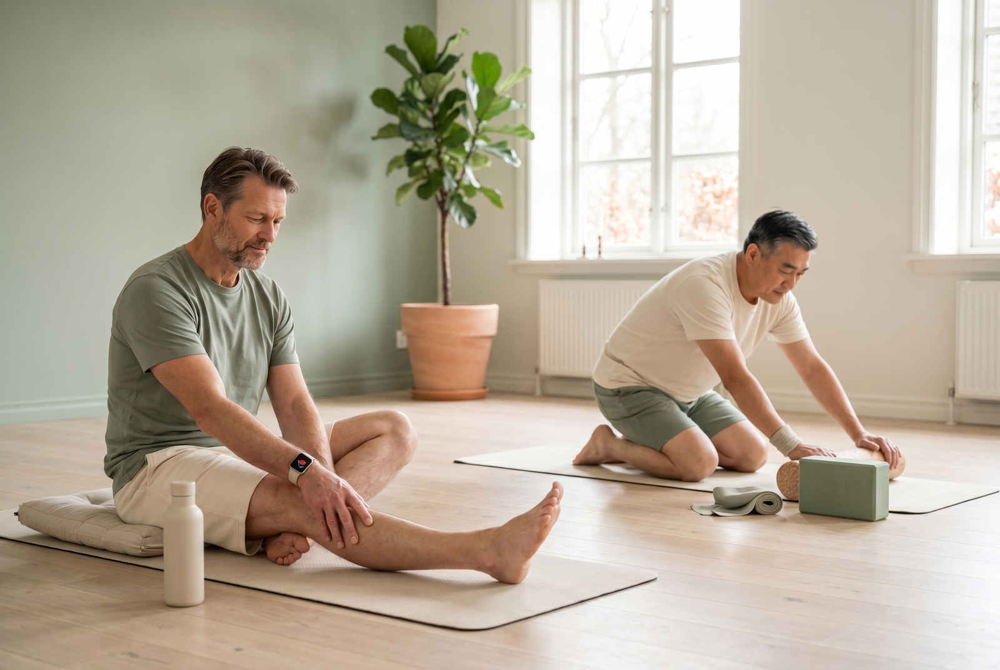
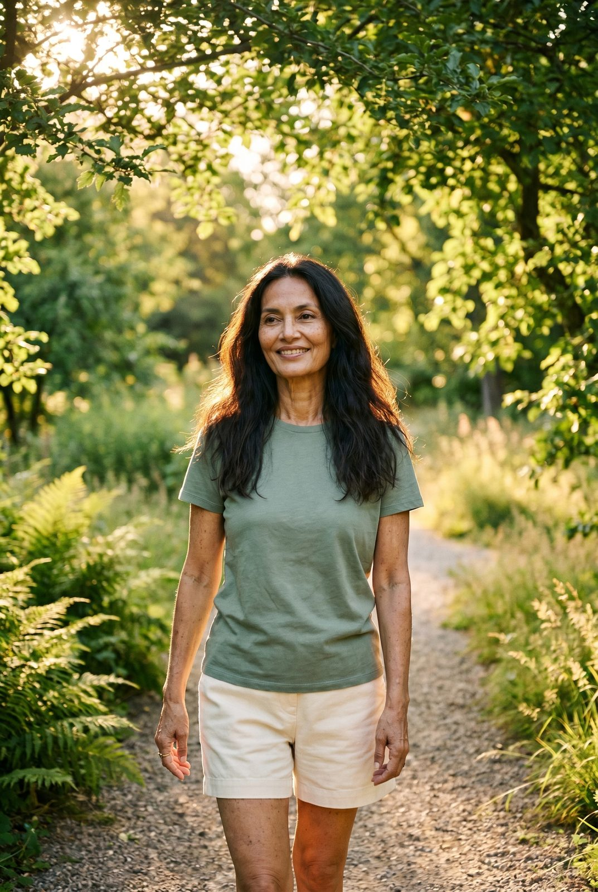
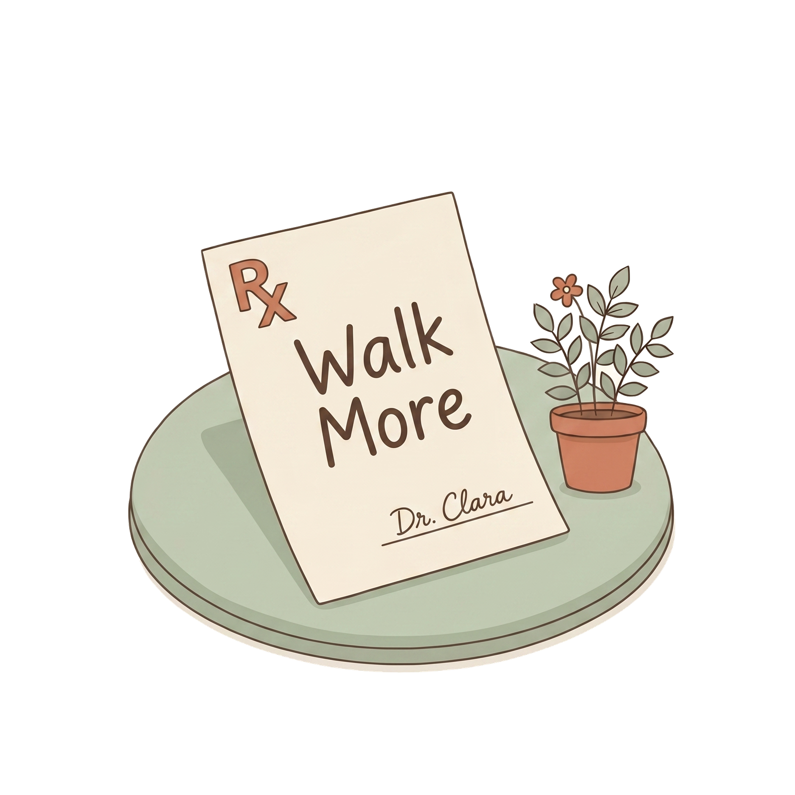
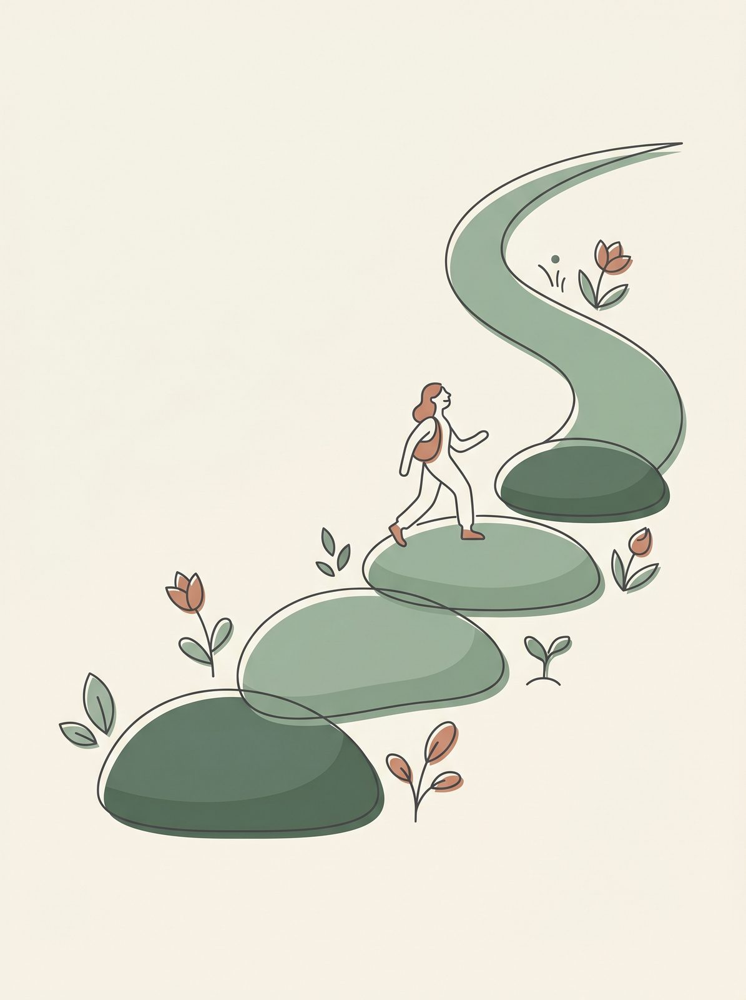

Walking for your back
The simplest, cheapest, best studied thing you can do for a sore back. Here is what the research actually shows, and a gentle 8 week plan to build the habit.
A short daily walk is one of the most powerful tools for chronic low back pain, and one of the few with benefits that last.
Why walking, of all things?
When your back hurts, resting feels like the safe choice. It usually is not. Every major back pain guideline now says the same thing: stay active. Lying down for more than a day or two slows recovery and makes long term pain more likely. Gentle movement keeps the joints nourished, the muscles working, and the nervous system calm.(1) The American College of Physicians puts non drug, active care like this ahead of medication as the first thing to try.(2)
 ✓ Walk
✕ Bed rest
✓ Walk
✕ Bed rest
And of all the active options, walking is the one almost anyone can do. It needs no gym, no equipment, and no special skill. It gently loads the spine, boosts blood flow and mood, and helps with weight and sleep, all of which feed back into less pain.
The one treatment that keeps working after you stop

In the largest review of exercise for chronic low back pain ever done (249 trials), exercise reliably reduced pain compared with no treatment, with moderate certainty evidence.
More striking: exercise is the only treatment with benefit that continues after the program ends. Pills, heat, and hands on therapy fade when you stop. Movement does not.(3)
The walking study worth knowing about
In 2024, a large Australian trial called WalkBack followed 701 adults who had just recovered from a bout of low back pain. Half were given a simple, individualised walking program plus a few sessions with a physiotherapist; half got nothing. The walkers did dramatically better.(4)

In plain terms: a regular walking habit roughly doubled the time people stayed pain free, and they needed less treatment along the way. It is hard to find a pill that does that.(4) A 2025 review comparing exercise types found walking also delivered a meaningful drop in day to day pain and one of the largest improvements in everyday function of any single exercise type studied.(5)

Your walking prescription
Think of this like a medicine with a dose. Start low, build slowly, and aim for consistency rather than big efforts.
Sore is okay; sharp is not. A little muscle ache that settles within a day means you are building tolerance. Pain that sharpens or shoots down the leg means ease off and let it calm before your next walk.
Your gentle 8 week ramp
Tap each week as you finish it. Your progress saves on this device, so you can come back to it.
A note for your pattern
Walking suits most back patterns, with one tweak worth knowing if your pain runs down your leg with walking (the claudication pattern, Pattern 4). For that pattern, walking with a slight forward lean, such as pushing a shopping cart, opens up the spinal canal and lets you walk further. Plan a sit down rest before the leg pain forces you to stop, then carry on. If your pain is mainly in the back and worse with sitting (Pattern 1), you may find walking and standing actually feel better than long sitting.(6)

Making it stick
- Anchor it to something you already do, a walk after breakfast or after dinner.
- Split it up. Three 10 minute walks count as much as one 30 minute walk.
- Walk with someone, or to a podcast, so it feels like less of a chore.
- On a bad day, shrink the walk rather than skipping it. Five minutes keeps the habit alive.
When to check with a doctor first
- New or worsening weakness, numbness, or tingling in a leg or foot.
- Numbness around the saddle area, or any change in bladder or bowel control, seek urgent care.
- Back pain after a significant fall or accident, or with fever or unexplained weight loss.
For everyday mechanical back pain, walking is safe to start today. If anything above applies, let your clara care team know before you begin.
Sources
- Hartvigsen J, Hancock MJ, Kongsted A, et al. What low back pain is and why we need to pay attention. Lancet. 2018;391(10137):2356-2367.
- Qaseem A, Wilt TJ, McLean RM, Forciea MA. Noninvasive treatments for acute, subacute, and chronic low back pain: a clinical practice guideline from the American College of Physicians. Annals of Internal Medicine. 2017;166(7):514-530.
- Hayden JA, Ellis J, Ogilvie R, Malmivaara A, van Tulder MW. Exercise therapy for chronic low back pain. Cochrane Database of Systematic Reviews. 2021;9:CD009790.
- Pocovi NC, Lin CC, French SD, et al. Effectiveness and cost-effectiveness of an individualised, progressive walking and education intervention for the prevention of low back pain recurrence in Australia (WalkBack): a randomised controlled trial. Lancet. 2024;404(10448):134-144.
- Liu X, Gao W, Wu P, et al. Effects of different exercise interventions on lower back pain: a systematic review and meta-analysis. Frontiers in Physiology. 2025;16:1694330.
- Saskatchewan Provincial Spine Pathway. Patient guides to back exercises and maintaining a healthy back (CS-PIER-0118 and CS-PIER-0122). Saskatchewan Health Authority.
This guide is for education and is not a substitute for your clara doctor’s advice. Your walking plan is personalised to you. Seek urgent care for new leg weakness, saddle numbness, or bladder or bowel changes.